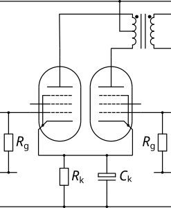

| Circuit Parameter | Operating Point | ||
|---|---|---|---|
| Field 1 | Value 1 | ||
| Field 2 | Value 2 | ||
| Field 3 | Value 3 | ||
| Field 4 | Value 4 | ||
| Field 5 | Value 5 | ||
| Field 6 | Value 6 | ||
| Field 7 | Value 7 | ||
| Field 8 | Value 8 | ||
The Push Pull Output Stage is the most efficient way of driving a speaker as it typically operates in Class AB and this makes it easier to deliver higher output powers if being loud is what you're after. In guitar amplifiers this circuit is almost always built with pentodes or beam tetrodes but triodes (or triode-strapped pentodes) are more commonly found in HiFi amplifiers as this typically yields greater linearity.
Output stages, particularly the push pull flavour, may seem complex from a design perspective but they are deceptively simple. The DC load line is vertical because there is no resistive load. This means that the quiescent current is simply set by the bias voltage - this can either be achieved by applying a negative bias voltage to the bottom of the grid leak resistors, or by using a cathode resistor (bypassed) to provide cathode bias. For simplicity, this design calculator allows you to set the desired quiescent anode current, from which the bias voltage can be determined and, in turn, the value of the required cathode resistor (remembering that the cathode resistor is common to both valves and so will carry twice the quiescent cathode current of each valve) is also shown in case cathode bias is desired (cathode bias tends to provide some compression, while fixed bias creates more "bark").
NB: For biasing, you select the desired anode current as it is this that determines the anode power dissipation at the supply voltage. However, when adjusting fixed bias amplifiers it is the cathode current that is typically measured, either by measuring the voltage across a 1 ohm cathode resistor or by using an adapter connected to an ammeter.
The AC load line allows us to understand the output swing and power and is determined by the characteristics of the output transformer, specifically the anode to anode impedance (Raa). When the valves are operating in Class A (both tubes conducting), both valves see the whole primary but, as they are out of phase, each valve sees half the total load impedance. When one of the valves is cut off, the other tube only sees its half of the primary and, because the impedance ratio of a transformer is the square of the turns ratio, this means that the "on" tube now sees just a quarter of the total load impedance. The Class B load line (with a slope of one quarter Raa) is simply drawn in the usual way, and the Class A load line is drawn through the bias point with a slope of one half Raa. The AC load line simply transitions from the Class A load line to the Class B load line where the two load lines cross. In practice, the transition from Class A to Class B is not abrupt, so there is a blend that occurs across the transition.
So far, we have not had to consider the characteristics of the valve at all! The primary thing we really need to care about with regard to the valve is whether or not the bias conditions will cause it to fail and, for this, the only thing we need to know is the anode power dissipation. As long as the bias point is below the anode power limit and the AC load line does not significantly encroach above the power curve then we should be fine (you can get away with a bit of encroachment in a guitar amplifier as the average power dissipation will be well below this).
At this point, the final step we need to consider for pentodes is where to set the screen voltage. For maximimum efficiency we want the AC load line to pass through the "knee" of the anode curves, for minimum distortion we want the load line to pass above the knee, and for maximum power and "colour" we want the load line to pass below the knee. In the last case, the one thing to bear in mind is that at maximum signal, significant screen grid current will start to flow such that the screen grid power limit will come into play. Once the desired screen grid voltage has been determined then it is typically created using a resistive dropper in the power supply (with a suitable reservoir capacitor) - the voltage dropped across this resistor will be determined by the quiescent screen current and preamp current.